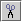
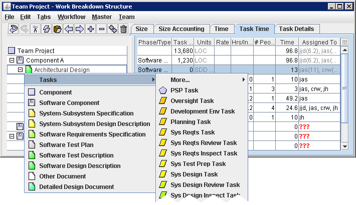
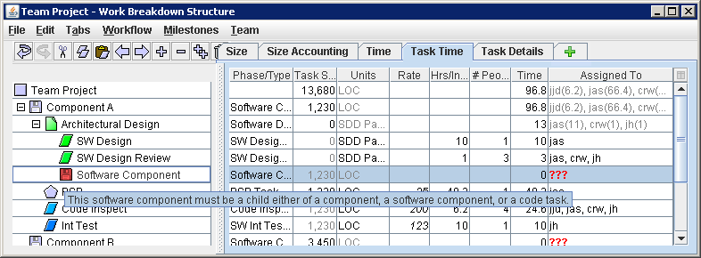

Editing the Work Breakdown Structure
The Work Breakdown Structure Editor and the Common Workflows Editor
both display a hierarchical collection of WBS items in an outline
format. You can edit this outline using both the mouse and the
keyboard, in a manner that will feel familiar to users of Microsoft
PowerPoint or Microsoft Word. This section explains many of the
editing features that are available for editing the hierarchical
WBS.
- To select an item in the WBS, just click
on the name of the item. You can click and drag to select an entire
range of WBS items. Once an item is selected, you can use the Up,
Down, PgUp, and PgDn keys to select a different WBS item.
- To create a new entry in the WBS, press
Enter or Insert. Pressing Enter will create a new item below the
currently highlighted WBS item; pressing Insert will insert the new
line before the currently highlighted WBS item. These features are
also provided on the Edit menu as the Insert After and Insert
options.
Note: during the initial launch, you will be creating many new
tasks. For this reason, the Enter key is configured to create a new row -
just like hitting Enter in a word processor would create a new paragraph.
After the launch is complete, it will be less common to create new tasks,
and you may find yourself hitting Enter and inserting tasks by mistake. To
fix this, a toggle button () is
provided on the toolbar. Clicking this icon will toggle the behavior of
the Enter key between "create a new row" (word-processor-like behavior) and
"move to the next line" (spreadsheet-like behavior). When you have the
"new row" behavior toggled off, you can still create a new row from the
keyboard by typing Ctrl-Enter.
- To edit the name of a WBS item, just
click on the name of the item. A blinking cursor will appear, allowing
you to edit the WBS item name.
- To delete the currently selected WBS
item(s), click the trash can button on the toolbar (
 ) or select Delete from the Edit
Menu.
) or select Delete from the Edit
Menu.
- The items are displayed in outline
format; this means that you can control their hierarchical arrangement
by changing their indentation. Press the Tab key to indent the
currently selected WBS item(s) to the right. Press the Shift-Tab key
to un-indent the currently selected WBS item(s) to the left. You can
also use the promote () and
demote () buttons (on the toolbar
and in the Edit menu) to accomplish this task.
- When a WBS item has children
(that is, when other items are indented underneath it), a small plus
() or minus () icon will appear to the left of the
WBS item. You can click on this plus/minus icon to hierarchically
expand and collapse that WBS item. The toolbar also provides expand
(), collapse (), expand all (), and collapse all () buttons for convenience.
- Cut / Copy / Paste operations are
provided for rearranging the WBS. Highlight one or more WBS items and
click the copy button on the toolbar () to copy them to the clipboard. Select
the desired destination and click the paste button on the toolbar
(). To move items instead
of copying them, use the cut button () instead of the copy button.
Note: If you find yourself repeatedly copying and pasting
some particular group of WBS items, you may be able to save time by
defining a common workflow instead.
- To rearrange the order of two adjacent items,
use the Move Up and Move Down buttons on the toolbar. The move up button
() will cause a WBS item to exchange
places with its previous sibling. If the item being moved has hierarchical
children, they will be moved as well. The move down button () will cause a WBS item to exchange
places with the sibling that follows. (Note that these operations could
also be accomplished with Copy and Paste, but for the specific task of
rearranging items, move up and move down can be more convenient.)
- Each WBS item is represented by an icon to the
left of the item name. This icon indicates whether the item is a software
component, document, or task. Rectangular icons
() are used to indicate tasks that
were created by the application of a workflow, while parallelograms
() are used to indicate ad-hoc tasks
that were manually added to the WBS. If you hover the mouse pointer over an
icon, a tool tip will display the name of the item type depicted by the
icon. For example, hovering over a WBS item with the floppy disk icon () would display a tool tip that reads
"Software Component." To change the type of a WBS item, click on the icon to
display a menu of options. You can also open this menu using your keyboard by
pressing the "context menu" key, or by typing Alt-Enter.

- To change the types of many items simultaneously, it is
more efficient to use the right hand side of the window. Select the
Task Time tab, select a cell in the Phase/Type column, and select
"Copy WBS Data" from the Edit menu. Then select a range of cells in
the Phase/Type column and type "Paste WBS Data" to paste the item type
into all cells at once.
- To calculate metrics correctly, the Work
Breakdown Structure Editor must enforce certain rules/restrictions on
the structure of the hierarchy. If you violate one of these rules, the
icon will turn red. Hovering over a red icon will display a tool tip
explaining the problem that needs correcting. For example, in the
picture below, there is a problem with one of the WBS items - its
floppy disk icon has turned red. The tool tip explains the specific
problem encountered.

- Once your project has begun and individuals start collecting data, the
WBS will be able to tell which tasks and components have been marked
complete. It will show this visually by drawing a strikethrough line on
the name of any WBS element that is 100% complete. For tasks that have
been assigned to more than one individual, strikethrough will be used in the
"Assigned To" column to indicate which individuals have marked the tasks
complete. These visual cues can help as you rebalance remaining work.
- You can insert a list of tasks into the WBS
by copying and pasting
task names from another program such as Excel or Word. Arrange the
task names in a vertical column in Excel (or place one task name on
each line in Word), and copy the names to the clipboard. Then,
highlight a row in the WBS, and click the paste button on the
toolbar (). The tasks will be
inserted before the selected row.
- To quickly find a particular item in the Work
Breakdown Structure, click the find ()
button on the toolbar. Enter a word or phrase to find the next/previous item
whose name or notes contain that text.
- If you wish to find a all of the items that
match a particular set of criteria, click the filter () button on the toolbar. In the window
that appears, specify the criteria that you are interested in and click the
Apply Filter button. The filter button will "light up" to indicate that a
filter is in effect (), and the WBS
Editor will hide items that do not match your criteria. Notes:
- In the name, milestones, and notes fields, you can enter multiple
values separated by the vertical bar (|) character, and it
will find items that match any of those values.
- In the Assigned To filter, you can list the initials of several people
to find tasks that are assigned to any one of them. (This can be a
helpful way to perform workload balancing.)
- In the labels field, you can enter multiple labels separated by
commas, and it will find items that have any of those labels.
- If a particular item matches, the WBS Editor will display all of its
parents and children as well.
- If you enter multiple criteria, they all must match. However, these
matches can occur at different levels of the hierarchy; so for
example, you could search for incomplete tasks underneath a component
whose name contained a particular word.
- Although nonmatching items are hidden from view, the WBS Editor will
not automatically expand the items that do match. If you would like
to see all of the matches, highlight the root of the project and click
the Expand All icon on the toolbar.
- Although nonmatching items are hidden from view, they are still
present and can still be affected by editing operations. For example,
if you edit the top-down time estimate for an entire component, it
will still scale all of the tasks underneath that component, including
the ones that are hidden by the filter.
- While the filter is in effect, you will not be able to edit the
hierarchical structure of the WBS. For example, you will not be able
to insert, delete, or move any components or tasks. If you need to
make these types of changes, you will need to remove the filter
first.
- The Work Breakdown Structure Editor
provides extensive undo and redo support via the undo () and redo () buttons on the toolbar. This undo/redo
not only encompasses structural changes made to the
hierarchical WBS in the left-hand side of the screen, but also
includes metrics changes made in the tabs on the right-hand
side of the screen.
All of the features above are designed to make editing the WBS easy
and fast, so you can create a useful plan during your team project
launch. However, you should take additional care when editing the WBS
after the project has begun. For more information, see the help topic
on editing the WBS after
project launch.